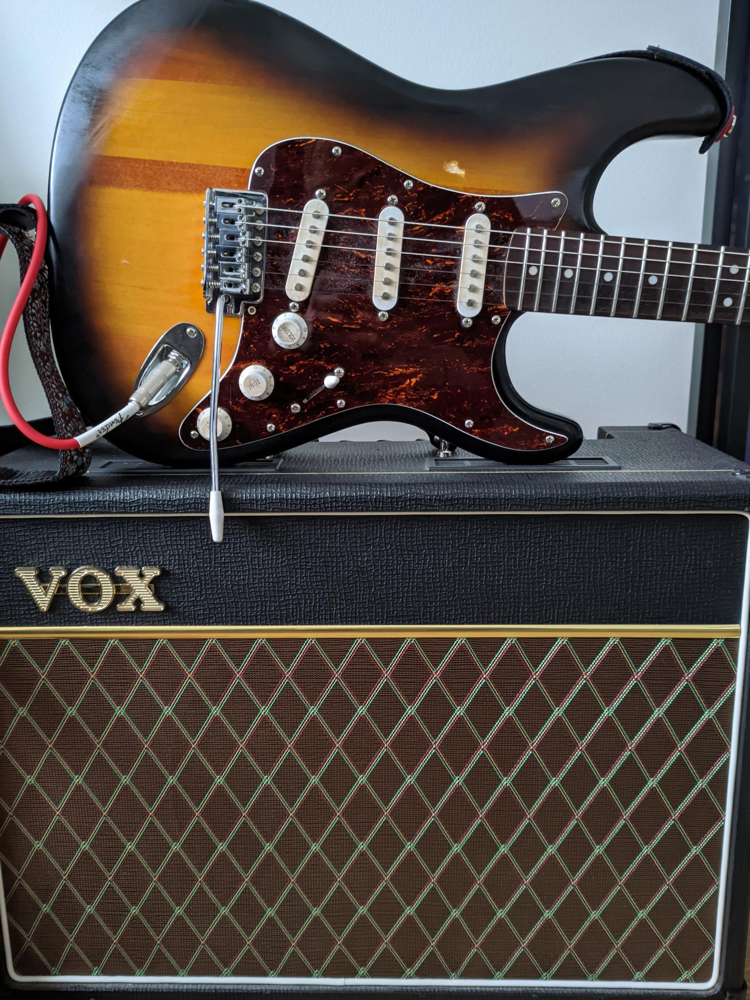
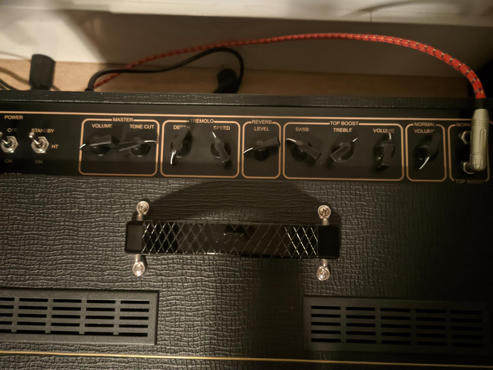

Guitar: 2022 Squier Bullet Stratocaster (with new tortoise pickguard)
Amplifier: Vox AC15C1
 Pedalboard: (on a Pedaltrain Metro 16, powered by 2 daisy chains)
- Vox V847A Wah
- Boss TU-2 Chromatic Tuner
- Ibanez TS9 Tube Screamer
- TC Electronic Dark Matter Distortion
- ENO Comp (only used as a clean boost)
- TC Electronic The Prophet Digital Delay (used as long atmospheric delay)
- Flamma FS05 (mainly using the phaser and vibrato modes)
- Behringer UC200 Ultra Chorus
- Boss DD-7 Digital Delay (using it for a short lead delay)
Recording gear: Behringer UMC404HD Interface